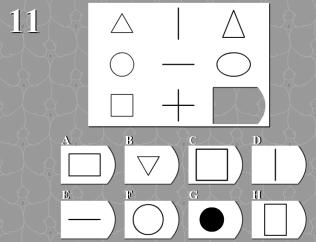
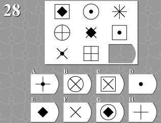
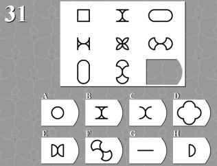

E：每种形状都应该是3个。
A：每行中间由左右两边组成。

C：每行右边的图形由左边图形向中间图形指向方向拉伸。
F：每行图形都包含横，竖，斜方向的线，数量都包含1，2，3
D：每行图形第3个都是由前2个组合并去掉重叠部分。
E：每种图形都应该有两个。
E：每一排的黑色图案分别向下移动一个格子就得到了下一排的图案。
D：第1行第3个，第2行2个，第3行1个合并为1个完整黑色。
第1行第1个，第2行3个，第3行2个合并为1个完整黑色。
第1行第2个，第2行1个，第3行3个也应该能合并为1个完整黑色。
G：每一列从上向下，圆弧向圆形移动。
A：每种图形3个。
B：每行图形都有圆，三角，正方形，都有一个实心小球在内环。
中间的三个点是三条直线的旋转点。
从左到右依次顺时针旋转。
H：每行图形第2个都是由第1个和3个组合并去掉重叠部分。

G：每种形状都有3个。
E：每行第2个形状是第3个形状的轮廓。
A：每行都是把第2个形状缩小放进第1个形状。

D：每行从左到右，都是由第一个图形的左右两边向内弯曲得到的。
E：
G：
G：外圈和内圈实心球总数都为7。